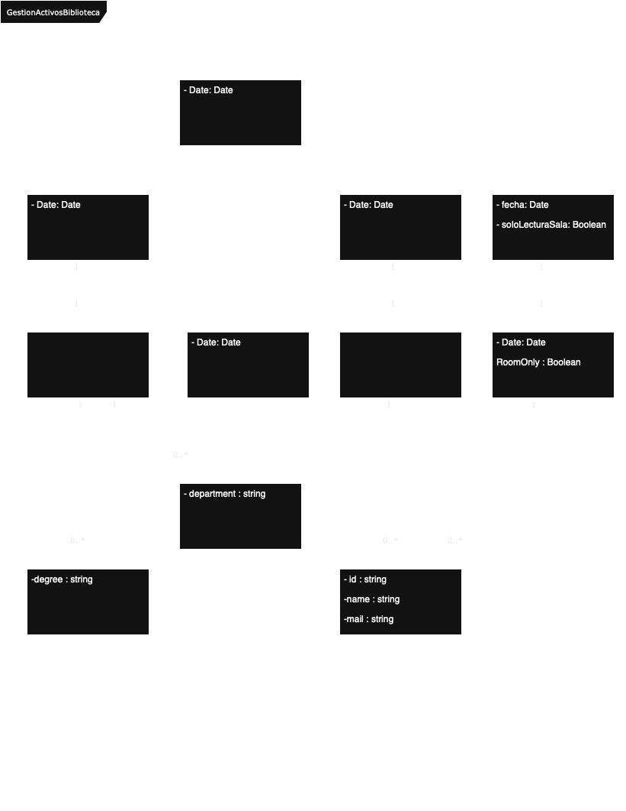

UML Class Diagram - Library Resource Management System
Author: Antonio Ortiz
Date: 25/04/2025
Degree: Computer Engineering
Subject: Software Engineering
Assignment: Activity 1 – Process Model & Class Design
🧠 Context
This assignment involved the analysis of functional requirements for a university library system and the modeling of its core components using UML class diagrams. The design includes resources (spaces and books), users (students and teachers), and the different types of reservations possible in the system.
🖼 UML Class Diagram
The following UML class diagram represents the designed structure of the library reservation system.

🧩 Class Descriptions
| Class | Description |
|---|---|
Space |
General class representing a physical resource in the library. |
ReadingSeat |
Subclass of Space. |
StudyRoom |
Subclass of Space. |
User |
General class representing any individual who interacts with the library. |
Student |
Subclass of User, with the attribute degree : string. |
Teacher |
Subclass of User, with the attribute department : string. |
Book |
Represents a library book, with attributes fecha : Date and soloLecturaSala : Boolean. Indicates whether the book is restricted to in-room reading only. |
SpaceReservation |
Represents the reservation of a space (seat or room) by a user, with attribute Date. |
RoomReservation |
Subclass of SpaceReservation, used for study rooms. |
SeatReservation |
Subclass of SpaceReservation, used for reading seats. |
BookReservation |
Represents a book reservation, with attribute RoomOnly : Boolean. Indicates if a room reservation is required to allow the book reservation. |
🔗 Class Hierarchies (Generalization)
| Generalization | Description |
|---|---|
User <> Student |
Student is a subclass of User. |
User <> Teacher |
Teacher is a subclass of User. |
Space <> StudyRoom |
StudyRoom is a subclass of Space. |
Space <> ReadingSeat |
ReadingSeat is a subclass of Space. |
SpaceReservation <> RoomReservation |
RoomReservation is a subclass of SpaceReservation. |
SpaceReservation <> SeatReservation |
SeatReservation is a subclass of SpaceReservation. |
🔗 Class Associations
| Association | Description |
|---|---|
Student <> RoomReservation |
Students can create room reservations. |
Teacher <> RoomReservation |
Teachers can create room reservations. |
User <> SeatReservation |
Users can reserve reading seats. |
User <> BookReservation |
Users can reserve books. |
SeatReservation <> ReadingSeat |
Each seat reservation is linked to a specific reading seat. |
RoomReservation <> StudyRoom |
Each room reservation is linked to a specific study room. |
BookReservation <> Book |
Each book reservation is linked to a specific book. |
BookReservation <> SeatReservation |
Book reservations validate the presence of an active seat reservation to allow access to the requested book. |
✅ Summary
This UML class diagram captures a simplified model for a university library resource booking system. It applies object-oriented design principles such as generalization and composition and supports potential rule extension based on user type or resource restrictions.